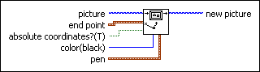

Draw Line VI
Owning Palette: Picture Functions VIs
Requires: Base Development System
Draws a line from the current pen position to the specified location in a picture.
The end point is either absolute or relative to the current position, depending on the value of the absolute coordinates? input.

 Add to the block diagram Add to the block diagram |
 Find on the palette Find on the palette |